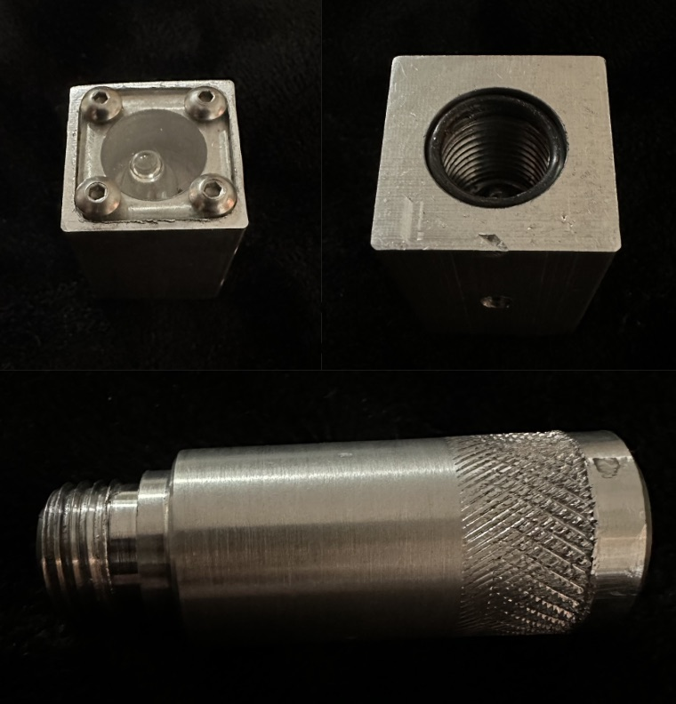

Custom Aluminum Flashlight
Machining my own heavy-duty aluminim flashlight

Background/Origin
For Course 2.670, I machined a flashlight from cylindrical and rectangular aluminum stock. Despite its simple design, the project required significant machining time, a clear reminder of why CNC machines are so powerful.

Machining the Flashlight
The square-like top piece forms the flashlight head. I machined it on the mill using a sequence of operations including facing, drilling, and tapping to create mounting holes for the LED and its securing screw. The handle was made on the lathe through turning, facing, chamfering, and knurling.
Final Notes / Next Steps
Being a hands-on person, I really enjoyed this project. Working directly with the material-- cutting, shearing, and grinding metal—-made the experience both challenging and fun.